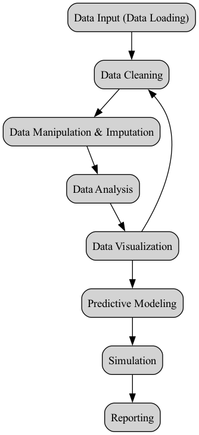
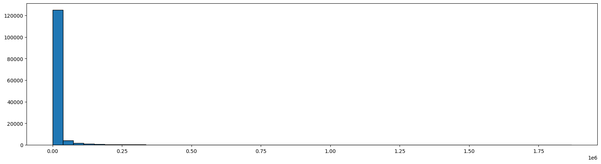
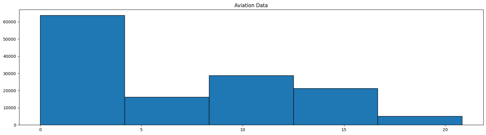
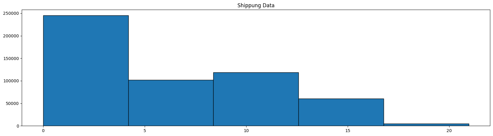
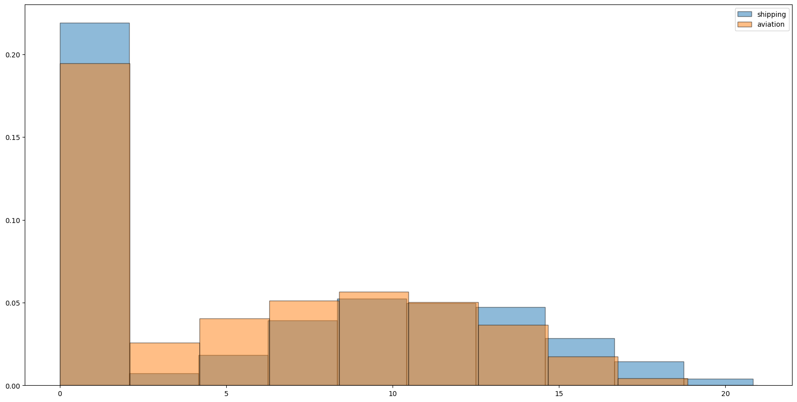
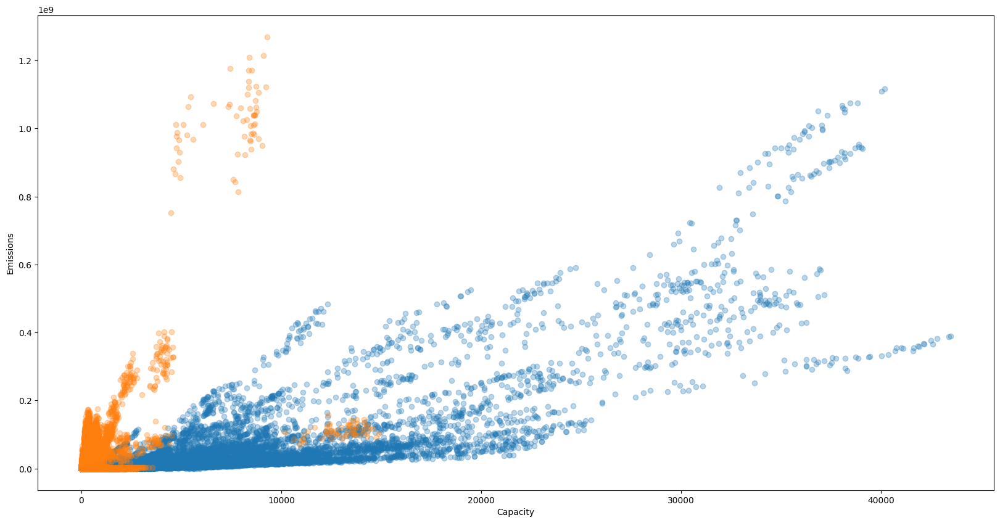
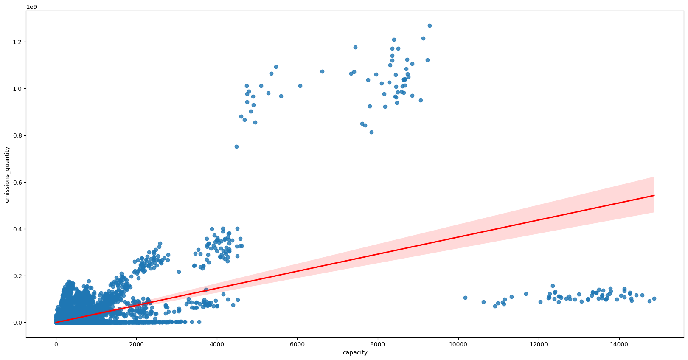
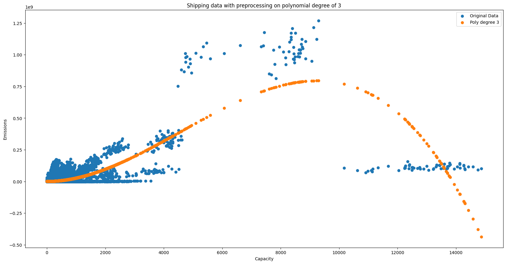
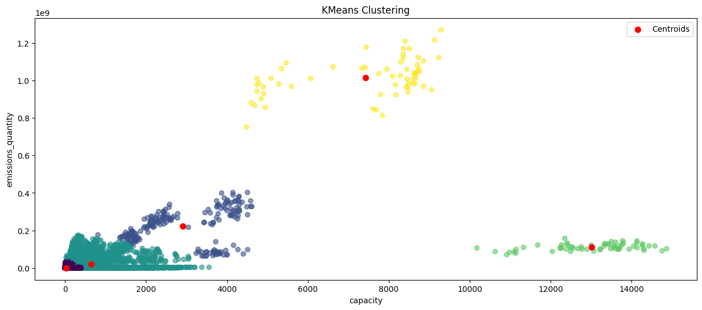
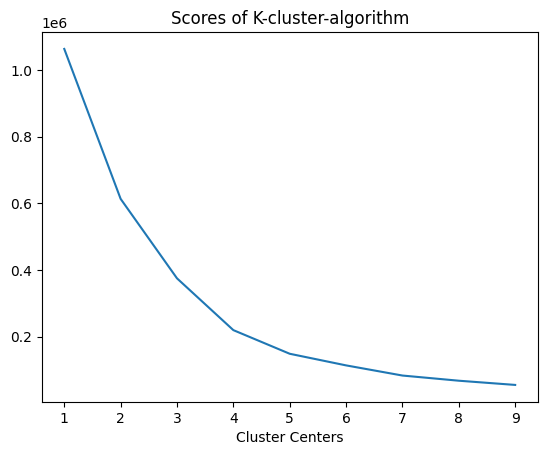

# packages loading
import numpy as np
import matplotlib.pyplot as plt
import pandas as pd
from sklearn.linear_model import LinearRegression
from sklearn.preprocessing import PolynomialFeaturesCase Study
Greening the Fleet – Data-Driven Sustainability at EcoTrans Logistics Background
EcoTrans Logistics is a mid-sized European transport company operating a fleet of delivery trucks across urban and regional routes. Facing rising fuel costs, stricter environmental regulations, and customer demand for greener logistics, the company has launched a data-driven initiative to reduce its carbon footprint. You are part of the data analytics team tasked with analyzing operational data and identifying opportunities to improve sustainability while maintaining efficiency. The following tasks correspond to different stages of your Jupyter Notebook analysis.

1. Data Loading & Initial Exploration
(Related to code blocks: importing libraries, loading datasets, displaying head/info)
EcoTrans has provided datasets containing: Shipping and Aircraft data (fuel type, age, capacity, CO2 output)
Your Tasks:
- Load the datasets and inspect their structure.
- Identify key variables relevant to sustainability (e.g. what could be relevant for further investigation).
- Check for inconsistencies in data types (e.g., numeric vs. categorical).
- Provide an initial summary of the dataset:
- Size of the dataset
- Number of variables
- columns/variables we might drop (null columns)
# Loading the data in
aviation_data=pd.read_csv("international-aviation_emissions_sources_v5_5_0.csv")
shipping_data=pd.read_csv("international-shipping_emissions_sources_v5_5_0.csv")aviation_data.info()<class 'pandas.DataFrame'>
RangeIndex: 135420 entries, 0 to 135419
Data columns (total 47 columns):
# Column Non-Null Count Dtype
--- ------ -------------- -----
0 source_id 135420 non-null int64
1 source_name 135420 non-null str
2 source_type 135420 non-null str
3 iso3_country 135420 non-null str
4 sector 135420 non-null str
5 subsector 135420 non-null str
6 start_time 135420 non-null str
7 end_time 135420 non-null str
8 lat 135420 non-null float64
9 lon 135420 non-null float64
10 geometry_ref 0 non-null float64
11 gas 135420 non-null str
12 emissions_quantity 135420 non-null float64
13 temporal_granularity 135420 non-null str
14 activity 135420 non-null float64
15 activity_units 135420 non-null str
16 emissions_factor 135420 non-null float64
17 emissions_factor_units 135420 non-null str
18 capacity 135420 non-null int64
19 capacity_units 135420 non-null str
20 capacity_factor 135420 non-null float64
21 other1 0 non-null float64
22 other1_def 0 non-null float64
23 other2 0 non-null float64
24 other2_def 0 non-null float64
25 other3 0 non-null float64
26 other3_def 0 non-null float64
27 other4 0 non-null float64
28 other4_def 0 non-null float64
29 other5 0 non-null float64
30 other5_def 0 non-null float64
31 other6 0 non-null float64
32 other6_def 0 non-null float64
33 other7 0 non-null float64
34 other7_def 0 non-null float64
35 other8 0 non-null float64
36 other8_def 0 non-null float64
37 other9 0 non-null float64
38 other9_def 0 non-null float64
39 other10 0 non-null float64
40 other10_def 0 non-null float64
41 created_date 135420 non-null str
42 modified_date 135420 non-null str
43 sector_id 135420 non-null int64
44 reporting_entity 135420 non-null str
45 lat_lon 0 non-null float64
46 native_source_id 135420 non-null str
dtypes: float64(28), int64(3), str(16)
memory usage: 48.6 MBaviation_data.describe()| source_id | lat | lon | geometry_ref | emissions_quantity | activity | emissions_factor | capacity | capacity_factor | other1 | other1_def | other2 | other2_def | other3 | other3_def | other4 | other4_def | other5 | other5_def | other6 | other6_def | other7 | other7_def | other8 | other8_def | other9 | other9_def | other10 | other10_def | sector_id | lat_lon | |
|---|---|---|---|---|---|---|---|---|---|---|---|---|---|---|---|---|---|---|---|---|---|---|---|---|---|---|---|---|---|---|---|
| count | 1.354200e+05 | 135420.000000 | 135420.000000 | 0.0 | 1.354200e+05 | 135420.000000 | 1.354200e+05 | 135420.000000 | 135420.000000 | 0.0 | 0.0 | 0.0 | 0.0 | 0.0 | 0.0 | 0.0 | 0.0 | 0.0 | 0.0 | 0.0 | 0.0 | 0.0 | 0.0 | 0.0 | 0.0 | 0.0 | 0.0 | 0.0 | 0.0 | 135420.0 | 0.0 |
| mean | 4.781811e+06 | 27.805174 | 10.273544 | NaN | 1.777794e+04 | 5582.035904 | 3.184848e+00 | 794.238621 | 2.640764 | NaN | NaN | NaN | NaN | NaN | NaN | NaN | NaN | NaN | NaN | NaN | NaN | NaN | NaN | NaN | NaN | NaN | NaN | NaN | NaN | 64.0 | NaN |
| std | 8.046154e+06 | 23.933280 | 75.547543 | NaN | 8.809461e+04 | 27660.538505 | 1.017911e-14 | 2833.385969 | 4.662863 | NaN | NaN | NaN | NaN | NaN | NaN | NaN | NaN | NaN | NaN | NaN | NaN | NaN | NaN | NaN | NaN | NaN | NaN | NaN | NaN | 0.0 | NaN |
| min | 8.268740e+05 | -54.843300 | -179.667007 | NaN | 0.000000e+00 | 0.000000 | 3.184848e+00 | 0.000000 | 0.000000 | NaN | NaN | NaN | NaN | NaN | NaN | NaN | NaN | NaN | NaN | NaN | NaN | NaN | NaN | NaN | NaN | NaN | NaN | NaN | NaN | 64.0 | NaN |
| 25% | 3.166576e+06 | 13.898300 | -61.427159 | NaN | 0.000000e+00 | 0.000000 | 3.184848e+00 | 0.000000 | 0.000000 | NaN | NaN | NaN | NaN | NaN | NaN | NaN | NaN | NaN | NaN | NaN | NaN | NaN | NaN | NaN | NaN | NaN | NaN | NaN | NaN | 64.0 | NaN |
| 50% | 3.167826e+06 | 34.053749 | 14.687551 | NaN | 5.674604e+01 | 17.817505 | 3.184848e+00 | 10.000000 | 0.938763 | NaN | NaN | NaN | NaN | NaN | NaN | NaN | NaN | NaN | NaN | NaN | NaN | NaN | NaN | NaN | NaN | NaN | NaN | NaN | NaN | 64.0 | NaN |
| 75% | 3.169110e+06 | 44.883974 | 55.675500 | NaN | 2.638393e+03 | 828.420547 | 3.184848e+00 | 259.000000 | 3.535523 | NaN | NaN | NaN | NaN | NaN | NaN | NaN | NaN | NaN | NaN | NaN | NaN | NaN | NaN | NaN | NaN | NaN | NaN | NaN | NaN | 64.0 | NaN |
| max | 5.112815e+07 | 78.246101 | 179.195999 | NaN | 1.868720e+06 | 586753.356177 | 3.184848e+00 | 43471.000000 | 78.992528 | NaN | NaN | NaN | NaN | NaN | NaN | NaN | NaN | NaN | NaN | NaN | NaN | NaN | NaN | NaN | NaN | NaN | NaN | NaN | NaN | 64.0 | NaN |
2. Data Cleaning & Preparation
Before analysis, the dataset must be cleaned.
Tasks: 1. Identify missing or null values across all columns and drop the columns. 2. Decide how to handle missing data: - Remove rows? - Impute values? 3. Convert the “end_time” variable from a string to a datatime format (try to do this with a function which would work in general for any csv containing that column) 4. Build a function which adds a new column for the year from the respective end_time variable. It will help us to show trend development later on. Also make sure, it is converted into a numeric format.
# cleaning the null columns
aviation_data=aviation_data.dropna(axis=1)
shipping_data=shipping_data.dropna(axis=1)# converting a dataformat
csv_list=[aviation_data,shipping_data]
def data_conversion(data):
data["end_time"]=pd.to_datetime(data["end_time"])
return data
for data in csv_list:
data_conversion(data)aviation_data.info()<class 'pandas.DataFrame'>
RangeIndex: 135420 entries, 0 to 135419
Data columns (total 25 columns):
# Column Non-Null Count Dtype
--- ------ -------------- -----
0 source_id 135420 non-null int64
1 source_name 135420 non-null str
2 source_type 135420 non-null str
3 iso3_country 135420 non-null str
4 sector 135420 non-null str
5 subsector 135420 non-null str
6 start_time 135420 non-null str
7 end_time 135420 non-null datetime64[us]
8 lat 135420 non-null float64
9 lon 135420 non-null float64
10 gas 135420 non-null str
11 emissions_quantity 135420 non-null float64
12 temporal_granularity 135420 non-null str
13 activity 135420 non-null float64
14 activity_units 135420 non-null str
15 emissions_factor 135420 non-null float64
16 emissions_factor_units 135420 non-null str
17 capacity 135420 non-null int64
18 capacity_units 135420 non-null str
19 capacity_factor 135420 non-null float64
20 created_date 135420 non-null str
21 modified_date 135420 non-null str
22 sector_id 135420 non-null int64
23 reporting_entity 135420 non-null str
24 native_source_id 135420 non-null str
dtypes: datetime64[us](1), float64(6), int64(3), str(15)
memory usage: 25.8 MB# function for building a new column year
def year(data):
data["year"]=pd.to_numeric(data["end_time"].dt.year)
return data
for data in csv_list:
year(data)Your data are now in a format with which we can start doing the real analysis. As we are primarily interested in identying patterns which help as to maintain and improve our operations in regards to sustainability topics, it might make sense to get a feeling on the emissions data E.g. start to plot the emissions data (emissions_quantity) of the aircraft fleet on a histogramm to get a feeling for the dimensions.
plt.figure(figsize=(20,5))
plt.hist(aviation_data["emissions_quantity"],edgecolor="black",bins=50)
plt.show()
Does it make sense to plot these values without some further manipulation? Would you hand over this histogramm you your boss? Any idea to convert your emissions data into a more handy format? It might be useful to convert the data with the logarithm. Define a function for both files which performs a log-transformation on these columns
Your Task: - Build a function which performs a log-transformation the emissions_quantity data - validate that your function worked (.describe() is a fast way to get some stats) - plot the data again, can you spot a problem? - read the error code and report what the problem might be - try to find a way to solve the problem
def logarithmic(data):
data["emissions_quantity"]=np.log2(data["emissions_quantity"])
return data
for data in csv_list:
logarithmic(data)/Library/Frameworks/Python.framework/Versions/3.14/lib/python3.14/site-packages/pandas/core/arraylike.py:402: RuntimeWarning: divide by zero encountered in log2
result = getattr(ufunc, method)(*inputs, **kwargs)aviation_data.describe()/Library/Frameworks/Python.framework/Versions/3.14/lib/python3.14/site-packages/numpy/lib/_function_base_impl.py:4596: RuntimeWarning: invalid value encountered in subtract
diff_b_a = b - a
/Library/Frameworks/Python.framework/Versions/3.14/lib/python3.14/site-packages/pandas/core/nanops.py:1020: RuntimeWarning: invalid value encountered in subtract
sqr = _ensure_numeric((avg - values) ** 2)| source_id | end_time | lat | lon | emissions_quantity | activity | emissions_factor | capacity | capacity_factor | sector_id | year | |
|---|---|---|---|---|---|---|---|---|---|---|---|
| count | 1.354200e+05 | 135420 | 135420.000000 | 135420.000000 | 1.354200e+05 | 135420.000000 | 1.354200e+05 | 135420.000000 | 135420.000000 | 135420.0 | 135420.000000 |
| mean | 4.781811e+06 | 2023-07-31 12:59:00.983606 | 27.805174 | 10.273544 | -inf | 5582.035904 | 3.184848e+00 | 794.238621 | 2.640764 | 64.0 | 2023.049180 |
| min | 8.268740e+05 | 2021-01-31 00:00:00 | -54.843300 | -179.667007 | -inf | 0.000000 | 3.184848e+00 | 0.000000 | 0.000000 | 64.0 | 2021.000000 |
| 25% | 3.166576e+06 | 2022-04-30 00:00:00 | 13.898300 | -61.427159 | NaN | 0.000000 | 3.184848e+00 | 0.000000 | 0.000000 | 64.0 | 2022.000000 |
| 50% | 3.167826e+06 | 2023-07-31 00:00:00 | 34.053749 | 14.687551 | 5.826448e+00 | 17.817505 | 3.184848e+00 | 10.000000 | 0.938763 | 64.0 | 2023.000000 |
| 75% | 3.169110e+06 | 2024-10-31 00:00:00 | 44.883974 | 55.675500 | 1.136544e+01 | 828.420547 | 3.184848e+00 | 259.000000 | 3.535523 | 64.0 | 2024.000000 |
| max | 5.112815e+07 | 2026-01-31 00:00:00 | 78.246101 | 179.195999 | 2.083362e+01 | 586753.356177 | 3.184848e+00 | 43471.000000 | 78.992528 | 64.0 | 2026.000000 |
| std | 8.046154e+06 | NaN | 23.933280 | 75.547543 | NaN | 27660.538505 | 1.017911e-14 | 2833.385969 | 4.662863 | 0.0 | 1.453393 |
#plt.figure(figsize=(20,5))
#plt.hist(aviation_data["emissions_quantity"],edgecolor="black",bins=50)
#plt.show()The log-transformation lead to negative infinite data entries. As it does not make any sense to record negative values, we now want to impute any negative values with exact 0.
Your Task: - again write a function which returns the datasets just with 0 or positive emissions_quantity data
def zero_cleaning(data):
data["emissions_quantity"]=data["emissions_quantity"].replace(-np.inf,0)
data.loc[data["emissions_quantity"]<0,"emissions_quantity"]=0
return data
for data in csv_list:
zero_cleaning(data)Verify if your function worked by calling .describe() again. Then again, plot your data! It should look nice and smooth now..
aviation_data.describe()| source_id | end_time | lat | lon | emissions_quantity | activity | emissions_factor | capacity | capacity_factor | sector_id | year | |
|---|---|---|---|---|---|---|---|---|---|---|---|
| count | 1.354200e+05 | 135420 | 135420.000000 | 135420.000000 | 135420.000000 | 135420.000000 | 1.354200e+05 | 135420.000000 | 135420.000000 | 135420.0 | 135420.000000 |
| mean | 4.781811e+06 | 2023-07-31 12:59:00.983606 | 27.805174 | 10.273544 | 6.011671 | 5582.035904 | 3.184848e+00 | 794.238621 | 2.640764 | 64.0 | 2023.049180 |
| min | 8.268740e+05 | 2021-01-31 00:00:00 | -54.843300 | -179.667007 | 0.000000 | 0.000000 | 3.184848e+00 | 0.000000 | 0.000000 | 64.0 | 2021.000000 |
| 25% | 3.166576e+06 | 2022-04-30 00:00:00 | 13.898300 | -61.427159 | 0.000000 | 0.000000 | 3.184848e+00 | 0.000000 | 0.000000 | 64.0 | 2022.000000 |
| 50% | 3.167826e+06 | 2023-07-31 00:00:00 | 34.053749 | 14.687551 | 5.826448 | 17.817505 | 3.184848e+00 | 10.000000 | 0.938763 | 64.0 | 2023.000000 |
| 75% | 3.169110e+06 | 2024-10-31 00:00:00 | 44.883974 | 55.675500 | 11.365444 | 828.420547 | 3.184848e+00 | 259.000000 | 3.535523 | 64.0 | 2024.000000 |
| max | 5.112815e+07 | 2026-01-31 00:00:00 | 78.246101 | 179.195999 | 20.833619 | 586753.356177 | 3.184848e+00 | 43471.000000 | 78.992528 | 64.0 | 2026.000000 |
| std | 8.046154e+06 | NaN | 23.933280 | 75.547543 | 6.132846 | 27660.538505 | 1.017911e-14 | 2833.385969 | 4.662863 | 0.0 | 1.453393 |
plt.figure(figsize=(20,5))
plt.hist(aviation_data["emissions_quantity"],edgecolor="black",bins=5)
plt.title("Aviation Data")
plt.show()
plt.figure(figsize=(20,5))
plt.hist(shipping_data["emissions_quantity"],edgecolor="black",bins=5)
plt.title("Shippung Data")
plt.show()
4. Data Visualization
As your aircraft data, as well as your shipping data are cleaned and prepared, you are asked to perform a comparison between both transports links. For this, pls plot both data in one figure.The visual insights will help communicate findings to management. Your Tasks:
- Create visualizations (histogram) to show:
- make sure they are in one figure
- add x- and y-label
- add title
- visualize them in a way that both data distributions can be clearly seen
- add the respective label and assign different colors
- Which transport links performs better in terms of emissions?
- Plot the relation of emissions_quanitities and the respective capacity of the aircrafts/ships in a scatter plot- can you spot some clusters (also both datasets in one figure )- Tip: reverse your log-transformation first
- Based on your scatter plot, do you identify clusters in the vessel fleet?
# Histogram
labels=["shipping","aviation"]
plt.figure(figsize=(20,10))
for data,label in zip(csv_list,labels):
x=data["emissions_quantity"]
plt.hist(x,edgecolor="black",density=True,alpha=0.5,label=label)
plt.legend()
plt.show()
def reverse(data):
data["emissions_quantity"]=np.exp(data["emissions_quantity"])
return data
for data in csv_list:
reverse(data)#scatter plot
plt.figure(figsize=(20,10))
for data, label in zip(csv_list,labels):
x=data["capacity"]
y=data["emissions_quantity"]
plt.scatter(x,y,label=label,alpha=0.3)
plt.xlabel("Capacity")
plt.ylabel("Emissions")
5. Advanced Analytics and Predictive Modeling
EcoTrans’ head of logisitcs was amazed by your work and the visualization. He is concerned that there might by a real issue with old aircrafts/ships and their respective emissions. He is asking you whether you can calcualte the effect of capacity on the respective emission. Your tasks:
- Train a linear regression model on both datasets each and report the beta-coefficient, as well as the R_sqaured
# train a linear Regression model for the aircraft data
x=aviation_data[["capacity"]]
y=aviation_data["emissions_quantity"]
Linear_Aircraft=LinearRegression()
Linear_Aircraft.fit(x,y)
beta_coeffcient=Linear_Aircraft.coef_
print(f"The beta coefficient is about {np.round(Linear_Aircraft.coef_,2)}")
print(f"The score/R_squared is about {np.round(Linear_Aircraft.score(x,y),2)}%")
The beta coefficient is about [10636.22]
The score/R_squared is about 0.63%# train a linear Regression model for the shipping data
x=shipping_data[["capacity"]]
y=shipping_data["emissions_quantity"]
Linear_Ships=LinearRegression()
Linear_Ships.fit(x,y)
beta_coeffcient=Linear_Ships.coef_
print(f"The beta coefficient is about {np.round(Linear_Ships.coef_,2)}")
print(f"The score/R_squared is about {np.round(Linear_Ships.score(x,y),2)}%")The beta coefficient is about [36504.39]
The score/R_squared is about 0.33%Can you spot the difference it their scores? Why is the linear model for the shipping data performing that bad?
The next plot is just for you, to see that a straight line from first degree polynomial model is not appropriate
import seaborn as sns
plt.figure(figsize=(20,10))
sns.regplot(data=shipping_data,x=shipping_data["capacity"],y=shipping_data["emissions_quantity"],line_kws={"color":"red"})
You ask your collegue and he is advising you to try out a polynomial regression. The advantage is that you add some degree of freedom and you might end up with a better score.
Your task: 1. Build up a polynomial Regression model just for the shipping data with polynomial degree of 3 2. Report the new score, did it improve? 3. Try to visualize the new regression line
# polynomial regression model/
poly=3
poly_transfer=PolynomialFeatures(poly)
x_poly=poly_transfer.fit_transform(x)
Poly_Model=LinearRegression()
Poly_Model.fit(x_poly,y)
R_squared=Poly_Model.score(x_poly,y)
print(f"The new score is now {np.round(R_squared,2)}")The new score is now 0.62# Visualization
plt.figure(figsize=(20,10))
y_predict=Poly_Model.predict(x_poly)
plt.scatter(x,y,label="Original Data")
plt.scatter(x,y_predict,label="Poly degree 3")
plt.xlabel("Capacity")
plt.ylabel("Emissions")
plt.legend()
plt.title("Shipping data with preprocessing on polynomial degree of 3")
plt.show()
It looks a bit better but acutally not perfect at all. But you might something else? Remeber, we want to find cluster/patterns. Maybe you see patterns of ships which are not efficient enough?
As we not just visually identify patterns but also confirm by analytical methods, we implemenet a Kmeans cluster algorithm. But before it is useful to scale the values as we have huge emission values and small capacity values and the Kmeans is distance based.
# some preprocessing
from sklearn.preprocessing import StandardScaler
from sklearn.cluster import KMeans
data=shipping_data[["capacity","emissions_quantity"]]
scaler=StandardScaler()
data_scaled=scaler.fit_transform(data)data = shipping_data[["capacity", "emissions_quantity"]]
# Skalieren
scaler = StandardScaler()
data_scaled = scaler.fit_transform(data)
# KMeans
kmeans = KMeans(n_clusters=5, n_init="auto")
labels = kmeans.fit_predict(data_scaled)
# Zentren zurücktransformieren
centers = scaler.inverse_transform(kmeans.cluster_centers_)
# Plot
plt.figure(figsize=(15,6))
plt.scatter(
data["capacity"],
data["emissions_quantity"],
c=labels,
cmap="viridis",
alpha=0.6
)
plt.scatter(
centers[:, 0],
centers[:, 1],
color="red",
s=200,
marker=".",
label="Centroids"
)
plt.xlabel("capacity")
plt.ylabel("emissions_quantity")
plt.legend()
plt.title("KMeans Clustering")
plt.show()

The k-cluster algorithm is an algorithm which requests deterministic specification of the amount of the clusters centers. But how to know how many clusters center to select?
Rule of thump: Elbow-Rule
Your Task: - Report the scores of your trained model - Plot them on a line plot - how many clusters you would select? - based on the clusters, which ship type you would recommend to retire?
scores=[]
plt.figure(figsize=(20,10))
for k in range(1,10):
kmeans = KMeans(n_clusters=k, n_init="auto").fit(data_scaled)
score=np.abs(kmeans.score(data_scaled))
scores.append(score)
plt.plot(np.arange(1,10,1),scores)
plt.title("Scores of K-cluster-algorithm")
plt.xlabel("Cluster Centers")
Text(0.5, 0, 'Cluster Centers')
It seems to be appropriate to take 5 cluster centers.
7. Sustainability Recommendations
Based on your analysis, provide actionable insights. You have identified that the ships associated with cluster 4 should be retired and leave the fleet. You are asked to provide csv data with the shipping data, extented by a label column, which included information about whether the ship is “ok”, should be “retired” or is “super efficient”. In our situation these categories are associated with the respective clusters.
Your Tasks:
Recommend strategies to reduce emissions: Fleet electrification? Route optimization? Identify quick wins vs. long-term investments. Propose KPIs EcoTrans should track going forward. Estimate potential impact: % reduction in emissions Cost savings
# extending the dataframe with the respective labels
kmeans=KMeans(n_clusters=5,n_init="auto").fit(data_scaled)
shipping_data["labels"]=kmeans.predict(data_scaled)labels
0 521472
3 9984
4 201
2 61
1 61
Name: count, dtype: int64shipping_data["category"]="unknown"
shipping_data.loc[shipping_data["labels"]<=2,"category"]="ok"
shipping_data.loc[shipping_data["labels"]==3,"category"]="retire"
shipping_data.loc[shipping_data["labels"]>3,"category"]="super efficient"
shipping_data["category"].value_counts()category
ok 521594
retire 9984
super efficient 201
Name: count, dtype: int64# Writing it into a csv
shipping_report=shipping_data.to_csv("report.csv",sep=";")